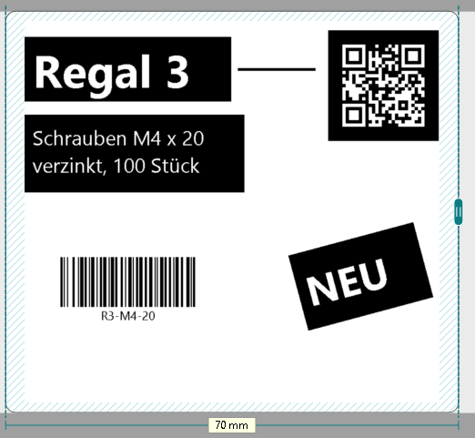
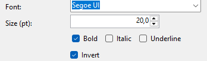
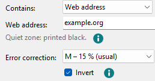

White on black for text and QR codes
Tick Invert to print artistic and paragraph text, QR codes and pictures white on black. It prints exactly what the canvas shows.

-
Artistic and paragraph text
Click the text and tick Invert on the right, below Bold, Italic and Underline.

The text then stands white in a black box 1 mm larger than its frame. Turn the text and the box turns with it. On the box the selection is drawn in a light dashed line.
-
QR codes
For a QR code, Invert is below Error correction. The code's modules turn white on black, and the quiet zone around the code is printed black too; the line under the content says so.

The standard allows white on black. Phone cameras usually read it, older or simple scanners often don't. Test it if in doubt.
-
Pictures
For pictures, Invert swaps black and white in the picture itself, without a box. More under Pictures.